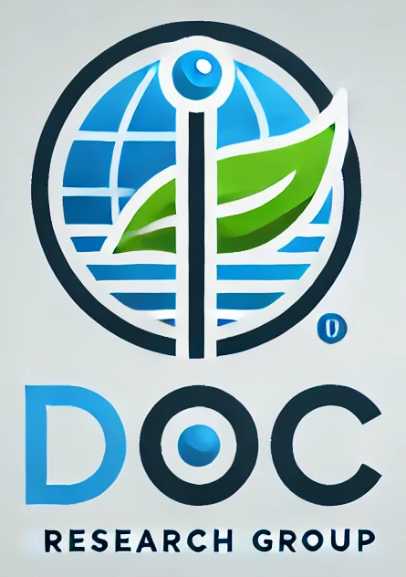
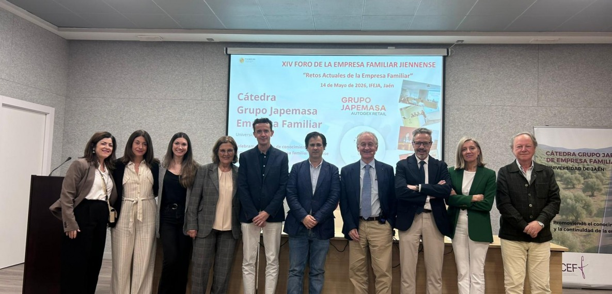
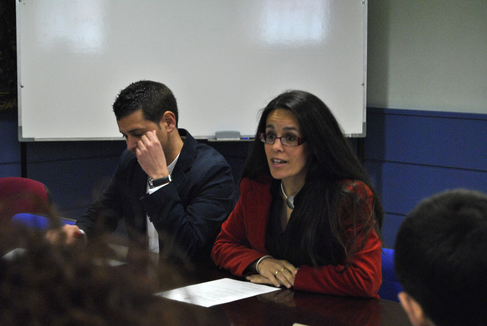
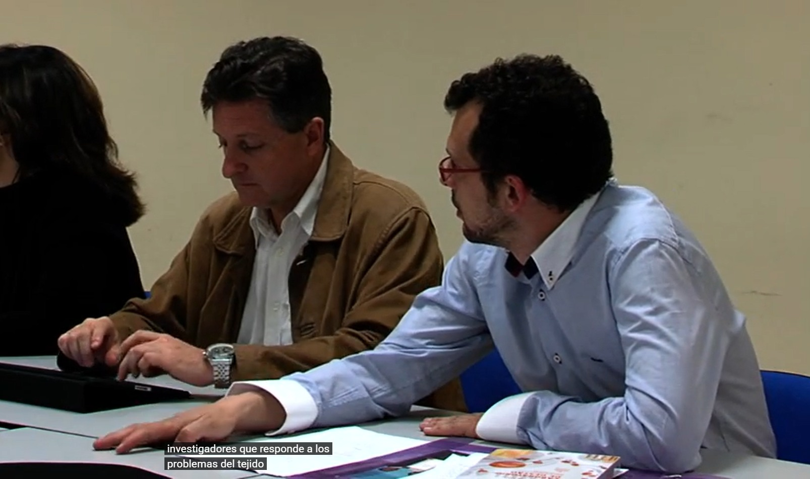
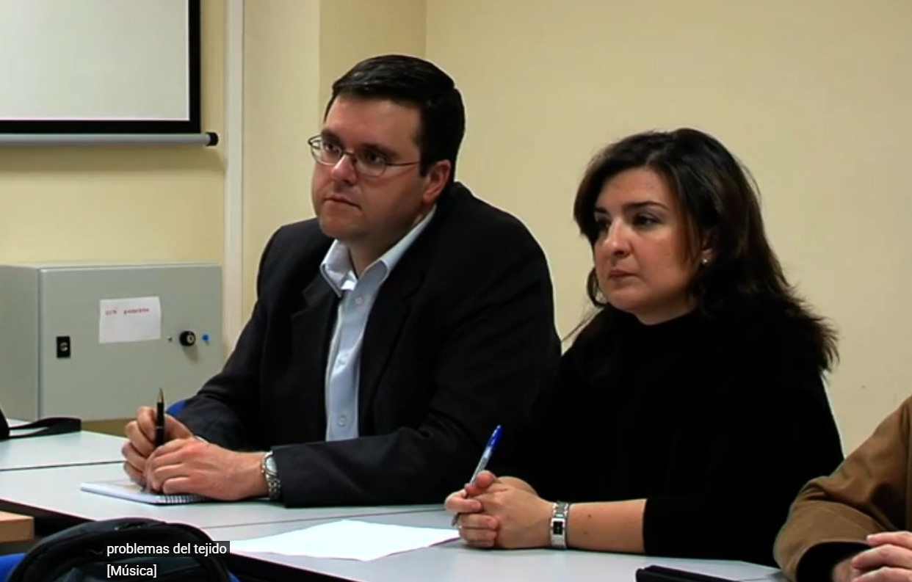
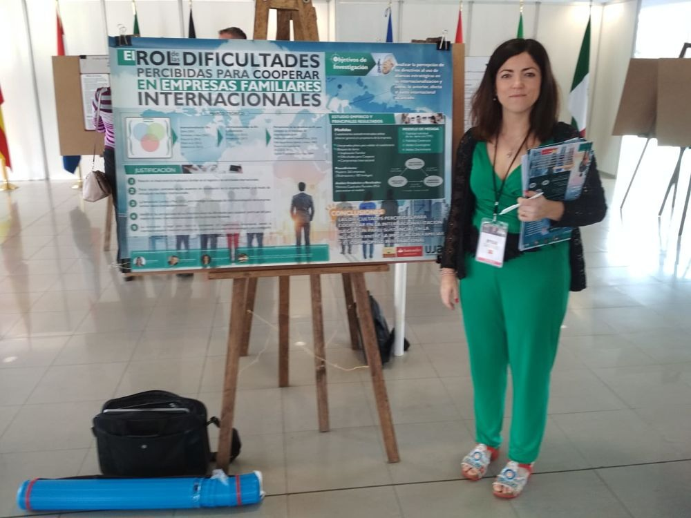
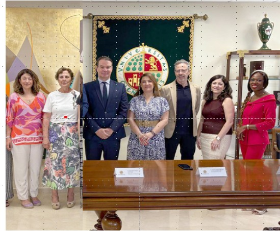
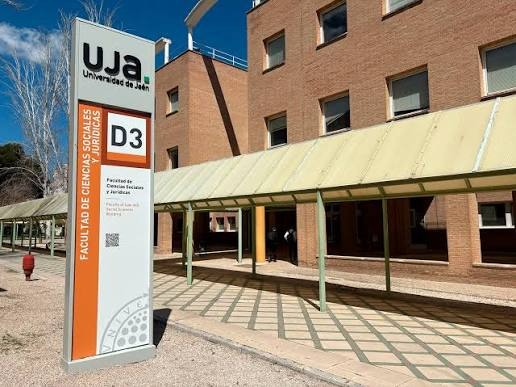

Empresa familiar
Gobierno, liderazgo, profesionalización, género e internacionalización.
Universidad de Jaén
Investigamos cómo las organizaciones evolucionan, innovan y generan impacto.
Ayudamos a otros grupos de investigación a evaluar oportunidades de mercado, definir su modelo de negocio y avanzar hacia la constitución de startups y spin-offs científicas, en coordinación con los servicios universitarios competentes.
*Recuento bruto acumulado, que puede incluir duplicidades y no equivale a publicaciones únicas.
Somos un grupo de investigación de la Universidad de Jaén centrado en generar y transferir conocimiento sobre los retos de las organizaciones y su entorno. Estudiamos cómo las empresas crean valor, innovan y mejoran su gestión.
Texto de presentación provisional, pendiente de validación por el grupo.
Ámbitos de interés identificados en la ficha institucional del grupo:
Gobierno, liderazgo, profesionalización, género e internacionalización.
Creación de empresas, estrategia competitiva y generación de valor.
Gobierno, participación de socios y profesionalización de cooperativas agrarias.
Economía circular, sostenibilidad, responsabilidad social y transformación empresarial sostenible.
Gobierno corporativo y responsabilidad social.
Composición del grupo según SICA, 23 de noviembre de 2026. Los correos se incluyen únicamente cuando figuran en la información facilitada por el grupo.

Responsable del grupo SEJ-232 según el informe SICA del 23/11/2026.
pnunez@ujaen.esLas fotografías individuales y los enlaces ORCID o Scholar podrán añadirse tras su verificación. El directorio refleja la composición registrada, no una clasificación de actividad individual.
Selección de 25 artículos científicos del grupo con referencia bibliográfica completa y enlace DOI cuando ha sido facilitado.
Journal of Family Business Management, 16(3), 769–805.
Núñez-Cacho, P., Lorenzo, D., & Maqueira-Marín, J. M. (2026).DOI ↗Entrepreneurship and Sustainability Issues, 14(1), 36–55.
Molina-Prados, A., Núñez-Cacho Utrilla, P. V., & Prados-Peña, M. B. (2026).DOI ↗Management & Organizational History, 19(2), 124–152.
Núñez-Cacho Utrilla, P. V. (2024).DOI ↗European Journal of Family Business, 16(1), 16–36.
Benghazi-Akhlaki, H., Molina-Moreno, V., Molina-Prados, A., & Núñez-Cacho, P. (2026).DOI ↗CIRIEC-España, Revista de Economía Pública, Social y Cooperativa, (114), 223–253.
Mozas-Moral, A., Puentes-Poyatos, R., & Bernal-Jurado, E. (2025).DOI ↗CIRIEC-España, Revista de Economía Pública, Social y Cooperativa, (111), 227–259.
García-Martí, E., Hernández-Ortiz, M. J., Ruiz-Jiménez, M. C., Pedrosa-Ortega, C., & Martínez-Jiménez, R. (2024).DOI ↗Journal of Retailing and Consumer Services, 79, Article 103836.
Gálvez-Sánchez, F. J., Molina-Prados, A., Molina-Moreno, V., & Moral-Cuadra, S. (2024).DOI ↗Heliyon, 10(4), Article e25388.
Núñez-Cacho, P., Mylonas, G., Kalogeras, A., & Molina-Moreno, V. (2024).DOI ↗Revista de Economía Mundial, (67), 243–271.
Puentes-Poyatos, R., Mozas-Moral, A., & Bernal-Jurado, E. (2024).DOI ↗Journal of Innovation & Knowledge, 9(4), Article 100559.
Mozas-Moral, A., Bernal-Jurado, E., & Puentes-Poyatos, R. (2024).DOI ↗Journal of the Knowledge Economy, 16(5), 15670–15723.
Gálvez-Sánchez, F. J., Molina-Prados, A., Prados-Peña, M. B., & Molina-Moreno, V. (2025).DOI ↗Research in International Business and Finance, 74, Article 102651.
Sanchez-Famoso, V., Cano-Rubio, M., & Fuentes-Lombardo, G. (2025).DOI ↗The Journal of Entrepreneurship, 33(3), 517–547.
Basly, S., & Cano-Rubio, M. (2024).DOI ↗Educational Technology Research and Development, 72(2), 1205–1223.
Ruiz-Jiménez, M. C., Martínez-Jiménez, R., & Licerán-Gutiérrez, A. (2024).DOI ↗Transylvanian Review of Administrative Sciences, 19(70E), 5–27.
D'Auria, A., Tregua, M., Vallejo-Martos, M. C., & Martínez-Jiménez, R. (2023).DOI ↗Journal of Family Business Strategy, 14(4), Article 100571.
Fuentes-Lombardo, G., Sanchez-Famoso, V., & Cano-Rubio, M. (2023).DOI ↗Review of Managerial Science, 18(2), 363–384.
Fernández-Uclés, D., Mozas-Moral, A., Bernal-Jurado, E., & Puentes-Poyatos, R. (2024).DOI ↗La Razón Histórica: Revista Hispanoamericana de Historia de las Ideas Políticas y Sociales, (58), 168–194.
Márquez-García, A. M. (2023).Sin DOI facilitadoEmployee Relations, 45(7), 27–45.
Núñez-Cacho Utrilla, P. V., Grande-Torraleja, F. A., Moreno Albarracín, A. L., & Ortega-Rodríguez, C. (2023).DOI ↗Environment, Development and Sustainability, 26(1), 775–797.
Prados-Peña, M. B., Gálvez-Sánchez, F. J., Núñez-Cacho, P., & Molina-Moreno, V. (2024).DOI ↗Applied Sciences, 12(12), Article 6132.
Górecki, J., & Núñez-Cacho, P. (2022).DOI ↗Active Learning in Higher Education, 25(3), 375–390.
Ruiz-Jiménez, M. C., Licerán-Gutiérrez, A., & Martínez-Jiménez, R. (2024).DOI ↗Corporate Governance and Research & Development Studies, (1), 7–12.
Lorenzo, D., Rojas, Á., Núñez-Cacho, P., & Kallmuenzer, A. (2022).DOI ↗Journal of Small Business Strategy, 32(2), 39–50.
Cano-Rubio, M., Sanchez-Famoso, V., & Fuentes-Lombardo, G. (2022).DOI ↗Applied Sciences, 12(8), Article 3991.
Górecki, J., Núñez-Cacho, P., & Rutkowska, M. (2022).DOI ↗Los artículos se muestran con la referencia completa facilitada por el grupo y enlace DOI cuando está disponible.
El grupo desarrolla trabajo en empresa familiar, economía social, estrategia, innovación y emprendimiento. El inventario de proyectos y contratos se completará al validar las convocatorias, periodos y entidades financiadoras.
Gobierno, sucesión, profesionalización, internacionalización y liderazgo.
Cooperativas agrarias, responsabilidad social y sostenibilidad empresarial.
Creación de empresas, modelos de negocio, digitalización y transferencia.
No se indican nombres de proyectos, cuantías o socios sin verificación documental individual.
Ayudamos a otros grupos de investigación a convertir sus resultados científicos en propuestas de valor, identificar oportunidades de mercado y diseñar el camino hacia una startup o spin-off de base científica o tecnológica.
Análisis del potencial de aplicación, segmentos de clientes, usuarios y competencia. Validación del problema y de la oportunidad comercial.
Propuesta de valor, posicionamiento, estrategia de comunicación, canales de comercialización, plan de negocio y presentación a potenciales socios.
Acompañamiento en la definición del equipo promotor, la hoja de ruta de constitución, la búsqueda de financiación y los primeros pasos comerciales, en coordinación con los servicios universitarios competentes.
Explora con SEJ-232 una posible vía de transferencia y emprendimiento académico.
Propuesta de servicio pendiente de aprobación por el grupo. La creación formal de una empresa y, cuando proceda, el reconocimiento como spin-off están sujetos a asesoramiento jurídico y a la normativa y autorizaciones aplicables de la Universidad de Jaén.
Fotografías originales de actividades y encuentros del grupo, extraídas de la presentación facilitada.







SEJ-232 · Universidad de Jaén. Para información institucional y contacto actualizado, consulta la ficha oficial del grupo.